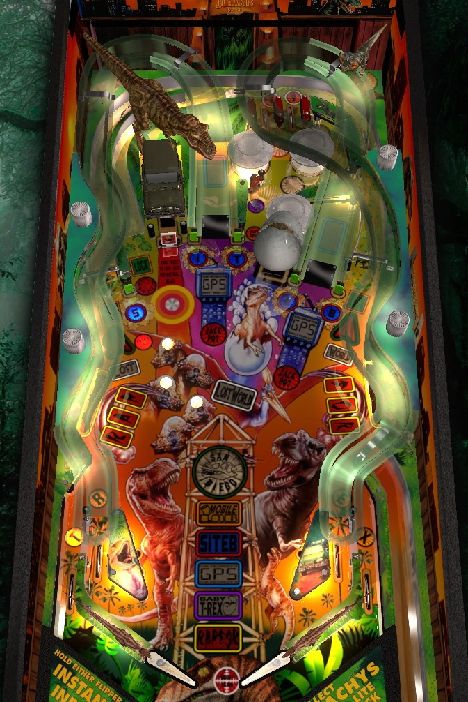

Not to be confused with Bally's Lost World series, including Lost World (Bally, 1978) or Escape from the Lost World (Bally Midway, 1988), and also not to be confused with other Jurassic Park-themed games, such as Jurassic Park (Data East, 1993) or Jurassic Park Pro/Premium/Limited Edition (Stern Pinball, 2018).
Best strategy on Lost World Jurassic Park is to play multiball repeatedly by bashing the drop target until locks are lit, making those three locks, and following the lit red jackpot shots in multiball. There is a mode progression, but the points are very supplemental thanks to the high risk and low reward they typically offer compared to a good multiball. If you can make it to the San Diego wizard mode, you're a better pinball player than the rest of us, but multiball is more efficient and more fun.
The skill shot is a timed press of the launch button based on what is underneath the dinosaur's foot on the DMD. Step on a human for a successful skill shot worth 100,000 points. Step on a dinosaur for 50,000 points.
Hit the drop target in front of the truck repeatedly to light all of the Pachys and qualify locks. For the first multiball, it takes 3 shots to light all the Pachys, and just one completion lights all 3 locks. For the second multiball, it takes 4 shots to light all the Pachys, and one completion lights 2 locks, meaning 2 completions are required for multiball ready. For the third multiball and any after that, it takes 5 shots to complete a set of Pachys, and each set lights only one lock. Lit locks will be at the left orbit, center loop, or right orbit. In any case, the ball will be trapped by a magnet in the back of the game, sent back down the center loop shot, held by a second magnet in front of the truck, and then trapped. However, locks are virtual, so that very same ball will be spit out of the Egg scoop immediately after. Lock a ball in all 3 locations to start 4-ball Lost World Multiball.
Lost World multiball has a simple three-stage progression. In stage 1, the center ramp and right ramp will each be lit for a single jackpot worth 500,000 points. Making both advances you to stage 2. In stage 2, the left and right orbits are each lit for one jackpot worth 750,000 points. Making both qualifies stage 3, the super jackpot, at the center loop shot. A raptor will walk back and forth on the dot display. The closer he is to the center of the screen when the center loop is made, the more the super jackpot is worth- either 1,000,000, 2,000,000, 3,000,000, or 4,000,000 points. Collecting the super jackpot resets the entire multiball sequence back to stage 1. There is no way to raise any jackpot value.
The Smart Missile, which is always given by the first Mystery award, can apply to any part of the multiball process by pressing the launch button during gameplay.
If any locks are not lit, using the Smart Missile will light all three locks.
If all locks are lit, the Smart Missile instantly starts multiball.
If used during multiball, the Smart Missile collects all currently lit jackpots. The Smart Missile can be activated when Super Jackpot is lit, but the game will often delay awarding the Super Jackpot to you if the Smart Missile is used so that the raptor can avoid giving out the 3,000,000 or 4,000,000 awards. Only one Smart Missile is available per player and per game, so use it wisely.
There are 5 main modes, each activated by a different feature in the game. All modes give 100,000 points when started, and 1,000,000 when completed; all modes are also either multiballs, or timed to 30 seconds (except GPS, which is 20 seconds). If there is less than 10 seconds left in a mode, the Add Time standup target nestled among the pop bumpers will add 10 seconds to the clock. This can only be used once per mode. Completing a mode lights the corresponding icon in the center of the playfield. Completing all 5 modes qualifies San Diego wizard mode at the Egg scoop.
Raptor
To start the first time: hit all 6 Raptor standup targets in the lower left and right of the playfield to light them. Once all are lit, they will begin flashing, and hitting any target starts the mode.
To start subsequent times: you must complete Raptor one more time than the previous playthrough required before the targets will flash.
Mode rules: Raptor is a 2-ball multiball. Hitting any target in the Rap or Tor banks lights a jackpot at the center loop for 15 seconds. The first jackpot scores 200,000 points; subsequent jackpots score 50,000 more than the previous; no known limit. Mode lasts until single ball play resumes.
To complete: collect two jackpots within a single play of the mode. Completing Raptor does not end it, and additional jackpots can still be scored if the multiball is kept running
Baby T-Rex
To start the first time: shoot the Egg scoop 3 times. Any shot counts as long as no multiball or other mode is running. Shots always score 50,000 points. If the Mystery is lit at the scoop, progress toward Baby T-Rex will be shown after the Mystery award is given.
To start subsequent times: each requires 1 more scoop shot than the previous playthrough did.
Mode rules: a hurry-up starts at 200,000 points, and counts down to 40,000 over about 20 seconds. The first shot to the scoop locks in the hurry-up value and starts a fresh 30 second timer. Now, for the duration of the timer, shots to the Egg scoop recollect the locked-in value. This is the second most valuable mode in the game.
To complete: make a total of 4 shots to the scoop before timers expire: one to lock in the hurry-up value, then 3 more once the 30-second timer starts. The mode does not end after 3 shots, so keep shooting the Egg scoop until time expires.
GPS
To start the first time: shoot both ramps 3 times each when no multiball or other mode is running to spell GPS on both.
To start subsequent times: each playthrough requires one more spelling of GPS on each ramp before the mode is qualified. Also, you must collect GPS letters by alternating between the two ramps, as only one will be lit at a time after GPS has been played once. This gets out of hand very quickly; it is very hard to play GPS twice in a game, and almost impossible to play it 3 times.
Mode rules: the ramp value starts at 300,000 points. Shoot either ramp as many times as you can in 20 seconds. Any time you make a ramp shot on the opposite ramp as the previous ramp shot, the ramp value increases by 100,000 points. This sounds very strong, but the ramp shots are too tight to make it a top-tier mode.
To complete: make a total of 4 shots to any ramp.
Site B
To start the first time: hit all 5 blue Site B post targets around the game to light them. Bumpers and slingshots rotate which post targets are lit. When all 5 targets are lit, they will start flashing, and hitting any flashing target begins the mode.
To start subsequent times: you need to complete Site B one more time than the previous run before tha targets will start flashing.
Mode rules: 30-second mode. One Site B target is flashing. Hit it to score 200,000 points, and increase the value of the next target by 100,000. However, the lit Site B target will move one position left when the left flipper is pressed, and one position right when the right flipper is pressed. The easiest way to wrangle this is to trap the ball on the right flipper, press the left flipper until the T is lit, then backhand the ball on the right flipper into the E target, which should have a very controllable rebound.
To complete: hit 3 lit Site B targets within the 30 seconds. Keep playing once you complete the mode, though, because the target value can continue to increase with no limit. This is the most valuable mode in the game, and single target hits can be worth 1,000,000 points or more with good ball control, which is a massive sum for this game.
Mobile Lab
To start the first time: Light all 4 in/out lanes to spell T-Rex, which causes the most recently lit lane to start flashing. Make the flashing lane to start the mode. Lane change is available to move the lit/flashing lane lights, but in an unintuitive way: the left flipper only swaps the T and R lanes, while the right flipper only swaps the E and X lanes, and never the twain shall meet.
To start subsequent times: additional spellings of T-Rex are needed before the flashing lane appears.
Mode rules: Mobile Lab is a 2-ball multiball with add-a-balls possible. The goal is to shoot the orbits as often as you can. Registering enough spins on either spinner scores 200,000 points and adds 1 ball to the playfield (unless all 4 balls are already in play). The first three jackpots need 15, 20, and 25 spins; anything after that needs 50 spins. Mode lasts until multiball ends.
To complete: make 3 jackpots in a single Mobile Lab round.
San Diego wizard mode
I'm gonna be honest, I've never gotten here, and I can't find video of anyone else who has, either. Raptor mode is just too hard to start, and GPS mode is just too hard to finish, for it to be reasonable. Based on the description in the game manual and knowledge of how other Sega wizard modes work, my best guess is that this is a 45-second 4-ball multiball with unlimited ball save, where the jackpot value starts at 200,000 or so, increases by about 1,000 per switch hit, and is collected at either ramp or orbit. Once the time runs out the game probably lets the balls drain, then starts anew. If you've gotten to this mode before, email pinballprimer@gmail.com and let me know how close I got with this guess!
Without exception, modes cannot be started while other modes are running. In fact, you can't even earn progress toward any mode while another mode is running. Modes can also not be started during Lost World Multiball. However, Lost World Multiball can interrupt a mode: in this case, the mode will pause until the standard multiball ends.
The Egg scoop is lit for a mystery award at the start of the game. After that, making a full orbit shot relights the mystery. The first mystery award will always give you the Smart Missile for that game. Other mystery awards include 100,000 points, Extra Ball, Special, Light Lock, Award Lock, Bonus X, Video Mode, and possibly others.
In video mode, you are tasked with swinging across two vines then over a T-Rex. In general, press the button when the stick figure is at the bottom of a vine and he will make it to the next obstacle. Video mode is worth 100,000 points if you fail and 350,000 if you succeed.
5 shots to the center loop lights extra ball. Every 5 after that scores 100,000 points. A special may also be available at a very large number of center loop shots.
Any extra balls that are lit rather than awarded directly can be collected at the S post target on the left.
Two consecutive orbit shots in the same direction scores 50,000 points. Continuing this combo with further orbit shots makes each shot worth 50,000 more than the previous until you miss. This only applies to the orbits, not the center loop.
There are two top lanes that spell JP. Light both to increase bonus multiplier. Lane change is available. It is nearly impossible for the ball to end up in these top lanes unless the game's flippers are very weak and full orbit shots don't send the ball speeding around like they should. Max bonus multiplier is 6x; an extra ball is lit the first time 6x bonus is achieved in a game.
Every 25th pop bumper scores a Pop Award which I believe is worth 25,000 points.
The Lost World: Jurassic Park has a conventional in/out lane setup. The in/out lanes are labelled T-Rex and used for Mobile Lab mode as described above.
Different bonuses are available based on how many times the ball interacted with each mode feature during the ball-in-play that just ended. I don't know exactly how it's calculated, but it doesn't really matter, because end of ball bonus is worth basically nothing compared to the rest of the game, especially since bonus multipliers are so hard to come by (hard-to-reach top lanes or mystery awards only). Even a good ball will likely have less than 100,000 points in bonus.

All copyrighted names and terms in this document belong to their respective owners. The information provided in this document is for educational purposes only and no infringement is intended.
Back to top To game list To main page